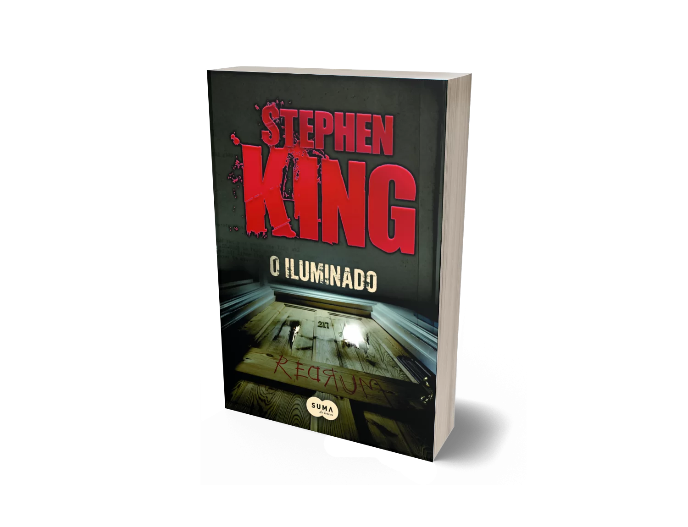

Livro - O iluminado
R$ 74,32
1x R$ 74,32 sem juros
O romance, magistralmente levado ao cinema por Stanley Kubrick, continua apaixonando (e aterrorizando) novas gerações de leitores. A luta assustadora entre dois mundos. Um menino e o desejo assassino de poderosas forças malignas. Uma família refém do mal. Nesta guerra sem testemunhas, vencerá o mais forte. Danny Torrance não é um menino comum. É capaz de ouvir pensamentos e transportar-se no tempo. Danny é iluminado. Será uma maldição ou uma bênção? A resposta pode estar guardada na imponência assustadora do hotel Overlook. Em O iluminado, quando Jack Torrance consegue o emprego de zelador no velho hotel, todos os problemas da família parecem estar solucionados. Não mais o desemprego e as noites de bebedeiras. Não mais o sofrimento da esposa, Wendy. Tranquilidade e ar puro para o pequeno Danny livrar-se das convulsões que assustam a família. Só que o Overlook não é um hotel comum. O tempo esqueceu-se de enterrar velhos ódios e de cicatrizar antigas feridas, e espíritos malignos ainda residem nos corredores. O hotel é uma chaga aberta de ressentimento e desejo de vingança. É uma sentença de morte. E somente os poderes de Danny podem fazer frente à disseminação do mal.